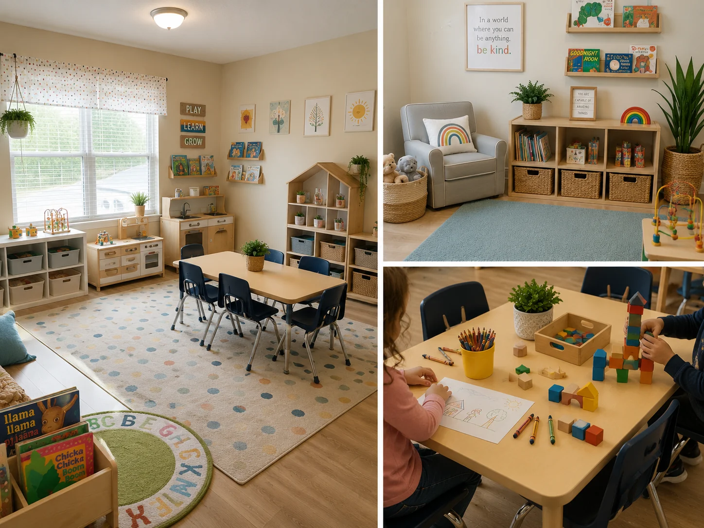

5.000
pesquisas por mês
Google para Daycare
Famílias da sua região podem estar procurando uma daycare no Google agora.
Ajude sua daycare a ser encontrada.
Conhecer o serviço5.000
pesquisas por mês
5.000
pesquisas por mês
500
pesquisas por mês
500
pesquisas por mês
Esses são exemplos de pesquisas feitas em Massachusetts no Google.
Dados do Google Keyword Planner — média mensal aproximada.
Período: agosto de 2025 a julho de 2026.
Sobre o Google Keyword Planner
Se existe tanta procura, a pergunta é:
quando procuram,
encontram a sua daycare?
Mas será que encontram a sua daycare?
Ter uma daycare aberta não significa que ela está bem apresentada no Google.
Se o perfil estiver incompleto, desatualizado ou nem existir, uma família pode pesquisar na sua região e encontrar outra daycare primeiro.
É aqui que entra o Google para Daycare.
Google para Daycare

Jardim Feliz Family Child Care
Family day care service
A MateGrowth cria seu perfil no Google ou organiza o perfil que você já tem.
Preparamos as informações, imagens e detalhes da sua daycare para que seu perfil fique completo, organizado e pronto para apresentar seu trabalho às famílias da região.
Se você ainda não tem perfil, preparamos a estrutura. Se já tem, organizamos o perfil existente.
Organizamos informações, horários, serviços, descrição, imagens e fotos.
Depois de tudo preparado, ensinamos o básico para você continuar cuidando do seu perfil.
Investimento
US$150
pagamento único
Criamos seu perfil no Google ou organizamos o perfil que você já possui.
O perfil fica no nome e sob o controle da sua daycare.
O perfil do Google é gratuito. Os US$150 são pelo trabalho realizado pela MateGrowth.
Contato pelo WhatsApp será ativado quando o número oficial for configurado.
Comece com a implantação por US$150.
Depois, você pode cuidar do perfil por conta própria ou deixar a MateGrowth continuar cuidando para você.
Opcional
US$50/mês
Se você preferir, a MateGrowth pode continuar cuidando do seu perfil todos os meses.
A cliente precisa enviar fotos, novidades e alterações de horário para a MateGrowth.
A manutenção mensal não é obrigatória.Dúvidas frequentes
Se ainda ficar alguma dúvida, você poderá falar com a MateGrowth no final da página.
A implantação custa US$150, pagamento único.
Esse valor paga o trabalho da MateGrowth para criar ou organizar o perfil da sua daycare no Google, preparar as informações e materiais e ensinar você a cuidar do perfil.
Sim.
O Google não cobra para criar um Google Business Profile.
O valor de US$150 é pelo trabalho realizado pela MateGrowth.
Não.
Depois da implantação, você pode cuidar do seu perfil por conta própria.
Nós ensinamos o básico para você continuar cuidando.
É um serviço opcional para quem prefere deixar o cuidado do perfil com a MateGrowth.
Inclui atualização de informações e horários, horários especiais, uma atualização por semana no Google, fotos enviadas pela cliente, resposta às novas avaliações e uma verificação básica mensal do perfil.
Não é obrigatório contratar.
Sim.
Se você já possui um perfil, a MateGrowth pode organizar o perfil existente dentro do escopo da implantação.
Não criamos outro perfil sem necessidade.
Sim.
O perfil fica no nome e sob o controle da sua daycare.
Sim.
A implantação inclui um treinamento básico para você aprender a cuidar das principais informações do seu perfil.
A implantação inclui:
Também organizamos as fotos enviadas pela cliente.
A cliente envia as fotos da própria daycare.
A MateGrowth organiza essas fotos para uso no perfil.
Não está incluído ensaio fotográfico.
Não.
Este serviço é específico para Google Business Profile.
Website é um serviço separado.
Não.
Family Request não faz parte do Google para Daycare.
Não.
Gestão de Instagram, Facebook ou outras redes sociais não está incluída.
Não.
Anúncios pagos não fazem parte deste serviço.
Também não está incluído investimento em anúncios.
Não.
O Google Business Profile é gratuito e pode existir sem anúncios pagos.
Não.
O trabalho ajuda sua daycare a ter um perfil mais completo e organizado no Google, mas não existe garantia de quantidade de famílias, contatos ou ligações.
Não.
Não prometemos posição específica no Google.
Na implantação, entregamos um texto pronto para você pedir avaliações.
Se você contratar o cuidado mensal de US$50, a MateGrowth também responde às novas avaliações.
Na implantação, organizamos as informações iniciais.
No cuidado mensal opcional, a MateGrowth pode atualizar horários, feriados e alterações informadas pela cliente.
Depois do contato, a MateGrowth confirma as informações necessárias da sua daycare e começa a preparar ou organizar o perfil.
A MateGrowth possui outros serviços para daycares, mas eles não fazem parte desta oferta de Google para Daycare.
Google para Daycare
Ajude as famílias da sua região a encontrar sua daycare quando pesquisarem no Google.
Criamos ou organizamos seu perfil e ensinamos você a cuidar dele.
Tire suas dúvidas antes de contratar.